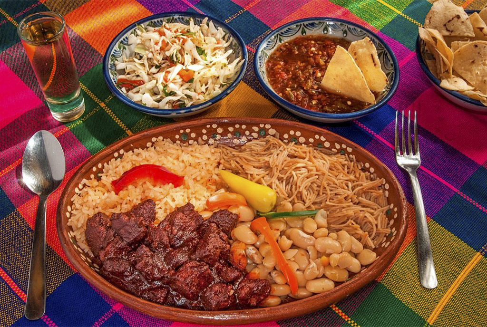
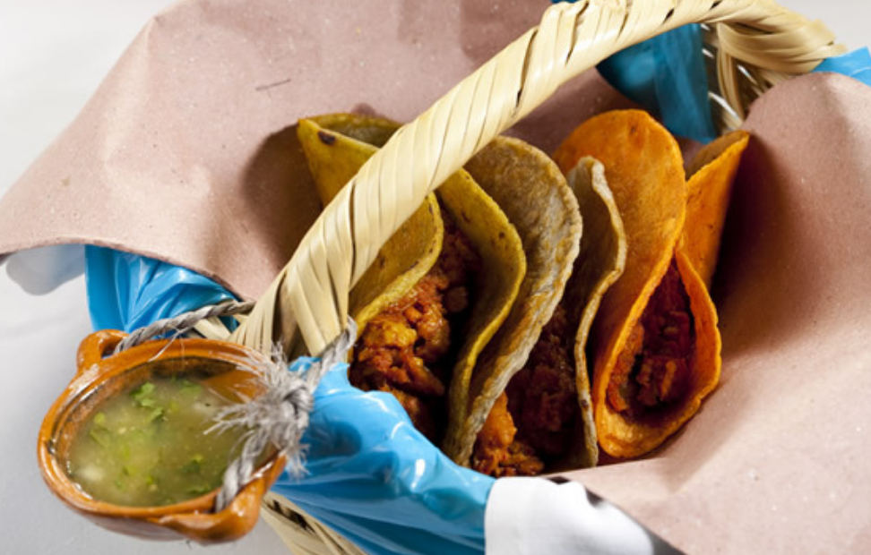

Asado de Boda
El asado de boda es otro de los platillos tradicionales de Zacatecas. Tuvo sus orígenes en la Revolución Mexicana cuando Pancho Villa pidió carne de cerdo con chile. Desde ese momento se asocia esta comida a celebraciones como 15 años o bautizos. No es de las recetas más comunes, por lo que si estás buscando qué hacer en Zacatecas, deberías dedicarte a encontrar una oportunidad para probar esta comida.
Caldo de Rata
Otra de las comidas estilo Zacatecas es el caldo de rata. Se prepara con una especie de rata que habita en los campos de esta región mexicana. Además, según estudios, tiene más propiedades nutritivas que el propio pollo y la carne de res. La receta tradicional nace de la necesidad de comer algo tras las temporadas de escasez vividas en Zacatecas hace unos 500 años atrás. Esta tradición se ha mantenido en el tiempo y gracias a sus propiedades, incluso hay quienes aseguran que es una sopa “levanta muertos".

Tacos Envenenados
Los tacos envenados también forman parte de las comidas especiales de Zacatecas que debes disfrutar durante tu estadía. Con respecto a su origen se cree que su nombre proviene de su creador Don Lauro, quien colocó afuera de su negocio cerca del ferrocarril “si quiere envenenarse coma tacos”. Estos tacos forman parte de la principal gastronomía de Zacatecas. Están hechos con una tortilla grande, rellenos de frijoles con papa y chorizo y se fríen en manteca hirviendo. Esta comida es tan popular entre los zacatecanos que este año se celebró el primer Festival del Taco Envenenado en Zacatecas.
